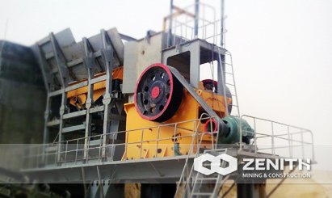

- 
HJ Jaw Crusher
HJ jaw crusher is my company in the foundation of introducing, absorbing domestic and foreign advanced technology, according to the actual needs of customers on-site, Zenith developed the high input, low energy consumption, high productivity crusher.
The practice has proved that HJ series of high-energy jaw crusher to the quality of its excellent performance, reliable and cost-effective to win the global customer trust, it is the ideal replace product of traditional jaw crusher.
Application of HJ Jaw Crusher
HJ series jaw crusher can be widely used in metal and nonmetal ore, cement, sand and gravel, building, metallurgy industry. Can be broken the minerals of iron ore, granite, quartzite, sandstone, maximum crushing strength can reach 320MP. Because of the high quality of its excellent performance, reliable and cost-effective winning the global customer trust.
HJ jaw crusher working principle
Motor drive motor through a host canal wheel, then drive the eccentric shaft rotates to move the jaw, jaw drive activity when moving jaw plate to the fixed jaw plate movement, the material is crushed or split pieces. When the movable jaw body driven movable jaw plate when away from the fixed jaw has been broken material discharged from the lower part of the jaw plate nesting population. As the motor rotates continuously, periodically crusher crushing and nesting.
HJ jaw crusher Benefits and advantages
- High performance. The model output is big, the movable jaw trajectory and the cavity shape is optimized, in order to determine the optimal meshing angle and travel characteristic value, the model of the power in the same circumstances yield greatly enhance.
- Good stability. By optimizing the structure of the model as a whole and partial counterweight to determine the flywheel, canal structure and with the weight of the wheel weights, so that the models in terms of vibration has been greatly improved. Compared with the same specifications jaw crusher, with greater stability.
- High reliability. Heat-treated forged eccentric shaft, oversized bearings, E-type rack, labyrinth seals and other equipment to make durable, more reliable.
- Easy operation, easy maintenance. Advanced side guard plate bolted system makes such models when replacing the side shield faster; reasonable machine structure makes such models in the nesting population size adjustment and more convenient replacement of brackets, which can effectively shorten the operating maintenance time.
The tacnology data
| Model | Feed Opening (mm) | Max Feeding (mm) | Discharge Opening (mm) | Capacity(t/h) | Power (kW) | Machine Size(mm) |
|---|---|---|---|---|---|---|
| HJ98 | 650×980 | 560 | 75-175 | 110-350 | 90-110 | 2470×2000×2180 |
| HJ110 | 800×1100 | 660 | 100-200 | 215-510 | 110-132 | 2875×2472×2530 |
| HJ125 | 950×1250 | 800 | 125-225 | 280-650 | 132-160 | 3320×2600×3120 |